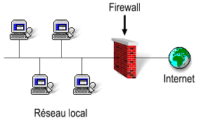

Compétence lié au projet
Administrer
Installer, configurer, mettre à disposition, maintenir en conditions opérationnelles des infrastructures,
des services et des réseaux et optimiser le système informatique d'une organisation.
- CE3.01 | en sécurisant le système d'information
- CE3.03 | en appliquant les normes en vigueur et les bonnes pratiques architecturales et de sécurité
- CE3.04 | en offrant une qualité de service optimale
- CE3.06 | en assurant la continuité d'activité
Description du Projet
L'objectif de ce TP était de mettre en place un pare-feu pour sécuriser un réseau, établir des règles de sécurité, comprendre le fonctionnement des réseaux, les protocoles réseau et les systèmes d'exploitation. Dans ce contexte, nous avions pour objectif de créer un pare-feu (firewall) sur la machine routeur afin de contrôler les échanges entre les deux réseaux. Ce pare-feu était en charge de filtrer les connexions entrantes et sortantes. Pour réaliser cette tâche, nous avons utiliser la commande iptables fournie par Netfilter.
Mon Expérience
Selon moi, cette compétence est la plus difficile à acquérir, car elle demande beaucoup de termes, de notions et de précision. J'ai encore beaucoup de choses à apprendre et beaucoup de points sur lesquels je doit m'améliorer.